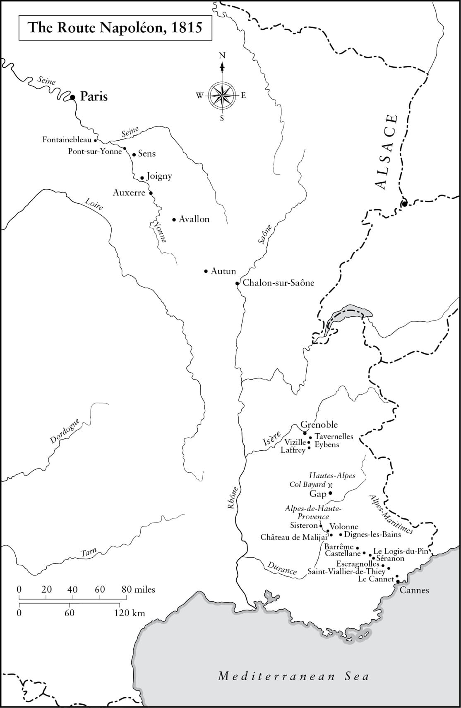

Tôi đã kết thúc công việc của mình với năm 1815, vì mọi thứ diễn ra sau đó thuộc về lịch sử bình thường.
• Metternich, Memoirs (Hồi ký)
Sự anh hùng chân chính bao gồm việc vượt lên những nghịch cảnh của cuộc đời, trong bất cứ dạng thức nào mà chúng có thể thách thức tranh đấu.
• Napoleon nói trên tàu HMS(*) Northumberland, năm 1815
⚝ ✽ ⚝
Ngay khi đã rõ là Ney, Macdonald, Lefebvre, và Oudinot không còn bụng dạ nào cho một cuộc nội chiến, và Đồng minh thông báo với Caulaincourt ngày 5 tháng Tư rằng họ sẽ dành cho Napoleon chủ quyền trọn đời với hòn đảo Elba trên Địa Trung Hải ngoài khơi Italy, Hoàng đế bèn ký một văn bản thoái vị tạm thời tại Fontainebleau để Caulaincourt sử dụng trong các cuộc đàm phán của ông ta. “Các vị mong muốn nghỉ ngơi”, ông nói với các thống chế. “Được thôi, các vị sẽ có nó”. Việc thoái vị chỉ có hiệu lực với ông chứ không phải với những người thừa kế của ông, và ông muốn Caulaincourt giữ bí mật điều này vì ông sẽ phê chuẩn văn bản chỉ sau khi một hiệp ước – bao gồm Elba, bảo đảm tài chính, an ninh cá nhân cho Napoleon và gia đình ông – được ký kết. Nhưng tất nhiên là tin tức nhanh chóng bị rò rỉ, cung điện vắng tanh khi các sĩ quan và triều thần rời đi để làm hòa với chính quyền lâm thời. “Có thể nghĩ rằng”, thành viên Hội đồng Đế chế Joseph Pelet de la Lozère bình luận về cuộc di tản này, “Hoàng thượng đã ở dưới mồ rồi”. Đến ngày 7 tháng Tư, tờ Moniteur không còn đủ chỗ trên các cột của nó để in tất cả các tuyên bố trung thành với Louis XVIII được đưa ra bởi Jourdan, Augereau, Maison, Lagrange, Nansouty, Oudinot, Kellermann, Lefebvre, Hullin, Milhaud, Ségur, Latour-Maubourg, và những người khác. Berthier thậm chí còn được bổ nhiệm làm chỉ huy một trong các đơn vị Cận vệ của Louis XVIII. “Hoàng thượng rất buồn và gần như không nói gì”, Roustam viết lại về những ngày đó. Sau thời gian sống tại cung điện Jelgava ở Latvia, nơi ông ta đã viết cho Napoleon yêu cầu trả lại ngôi vua cho mình vào năm 1800, Louis XVIII đã chuyển tới Hartwell House ở Buckinghamshire, Anh vào năm 1807, giờ đây từ nơi này ông ta chuẩn bị quay về Pháp để đòi lại ngai vàng cho mình, ngay khi biết được tin Napoleon đã thoái vị.
Song, ngay cả khi đã mất một đội ngũ sĩ quan và bộ tham mưu, Napoleon vẫn có thể phát động một cuộc nội chiến nếu ông muốn. Vào ngày 7 tháng Tư, những tin đồn về việc ông thoái vị đã khiến đạo quân đông 40.000 người tại Fontainebleau rời khỏi nơi trú quân của họ giữa đêm, diễu binh với súng và đuốc trên tay, hô vang “Hoàng đế muôn năm!”, “Đánh đổ lũ phản bội!” và “Tiến về Paris!” Những cảnh tương tự cũng diễn ra tại các doanh trại ở Orleans, Briaire, Lyon, Douai, Thionville, Landau, lá cờ trắng của nhà Bourbon bị đốt công khai tại Clermont-Ferrand và những nơi khác. Quân đoàn của Augereau gần như đã binh biến, và các đơn vị đồn trú trung thành với Napoleon đã tìm cách nổi dậy tại Antwerp, Metz, và Mainz. Tại Lille, binh lính đã công khai nổi dậy trong ba ngày, và trên thực tế đã bắn vào các sĩ quan của họ cho tới tận ngày 14 tháng Tư. Như Charles de Gaulle từng nhận xét: “Những người mà ông ấy làm cho phải chịu khổ sở nhất, những người lính, lại chính là những người trung thành nhất với ông ấy”. Bàng hoàng trước những hành động phản kháng thể hiện lòng trung thành này, Bộ trưởng Ngoại giao Anh-Huân tước Castlereagh đã cảnh báo Bộ trưởng Chiến tranh-Huân tước Bathurst, về “mối nguy hiểm của việc Napoleon ở lại Fontainebleau, xung quanh là binh lính vẫn trung thành với mình ở mức độ đáng kể”. Lời cảnh báo này cuối cùng cũng thúc đẩy Đồng minh ký kết Hiệp ước Fontainebleau sau năm ngày đàm phán, vào ngày 11 tháng Tư năm 1814.
Caulaincourt và Macdonald từ Paris tới đó hôm sau, mang theo bản hiệp ước giờ đây chỉ còn cần chữ ký của Napoleon phê chuẩn nó. Ông mời họ ăn tối, nhận ra sự vắng mặt của Ney, người đã ở lại thủ đô để làm hòa với nhà Bourbon. Hiệp ước cho phép Napoleon sử dụng danh hiệu Hoàng đế của ông và cho ông đảo Elba suốt đời, đưa ra những khoản cung cấp tài chính hào phóng cho cả gia đình, cho dù khoản cấp dưỡng hào phóng thái quá dành cho Josephine bị cắt giảm xuống còn 1 triệu franc mỗi năm. Bản thân Napoleon sẽ nhận được 2,5 triệu franc mỗi năm và Marie Louise có được các công quốc Parma, Piacenza và Guastalla tại Italy. Napoleon viết cho cô ngày 13 tháng Tư, nói: “Em ít nhất sẽ có một ngôi nhà và một đất nước đẹp… khi em mệt mỏi với đảo Elba của ta và ta bắt đầu làm em chán, vì ta chỉ có vậy khi ta già đi còn em vẫn trẻ”. Ông viết thêm: “Sức khỏe của ta tốt, lòng dũng cảm của ta vẫn nguyên vẹn, nhất là nếu em hài lòng với vận rủi của ta và nếu em nghĩ mình vẫn có thể hạnh phúc khi chia sẻ nó”. Ông vẫn chưa thể hiểu được rằng lý do cho một thành viên nhà Habsburg kết hôn với một người nhà Bonaparte là vì ông là Hoàng đế Pháp; còn giờ đây, khi ông chỉ còn là Hoàng đế của Elba, điều đáng mong mỏi của cuộc hôn nhân đã sụp đổ. Tìm được một cuốn sách viết về hòn đảo này, ông nói với Bausset, “Không khí ở đó trong lành và cư dân rất tuyệt vời. Ta sẽ sống không quá tồi, và ta hy vọng Marie Louise cũng sẽ không thấy quá rầu rĩ”. Song, chỉ hai tiếng trước khi Tướng Pierre Cambronne và một toán kỵ binh tới Orleans ngày 12 tháng Tư theo lệnh từ Napoleon để đưa cô và Vua La Mã đi 86,5 km tới Fontainebleau, một đoàn đại biểu Áo do Metternich phái tới đã đón cô và tùy tùng của cô tới lâu đài Rambouillet, nơi cô được thông báo cha mình sẽ tới gặp mình. Thoạt đầu, Marie Louise khăng khăng rằng cô chỉ có thể rời đi khi Napoleon cho phép, nhưng cô đã đổi ý khá dễ dàng khi được thuyết phục, cho dù cô viết cho Napoleon nói rằng đã bị đưa đi trái với ý mình. Không mất mấy thời gian để cô từ bỏ bất cứ kế hoạch nào có thể từng có về việc tới cùng ông, và thay vì thế đi về Vienna. Cô không hề có ý định sẽ sống rầu rĩ cho lắm.
Bất chấp tất cả sự lạc quan của ông trong lá thư viết cho Marie Louise, vào nửa đêm 12 rạng sáng 13 tháng Tư, sau khi ăn tối cùng Caulaincourt và Macdonald, Napoleon đã tìm cách tự sát. Ông uống một hỗn hợp thuốc độc “có kích thước và hình dạng như một củ tỏi” mà ông đã mang theo trong một cái túi lụa đeo trên cổ kể từ khi ông suýt bị lính Cossack bắt tại Maloyaroslavets. Ông đã không thử thêm cách tự sát nào khác, một phần vì Roustam và thị thần của ông là Henri, Bá tước de Turenne, đã cất mấy khẩu súng ngắn của ông đi. “Cuộc đời ta không còn thuộc về đất nước ta nữa”, là lời giải thích sau này của chính Napoleon:
⚝ ✽ ⚝
Hubert hầu phòng của ông đang ngủ trong phòng kế bên đã nghe thấy ông rên la, và gọi bác sĩ Yvan tới, ông ta đã cho gây nôn, nhiều khả năng bằng cách buộc Napoleon phải nuốt tro trong lò sưởi.
Maret và Caulaincourt cũng được gọi tới trong đêm. Sau khi đã rõ là ông sẽ không chết, Napoleon liền ký văn bản thoái vị vào sáng hôm sau “mà không do dự thêm” trên chiếc bàn một chân đơn sơ trong căn phòng phía ngoài màu đỏ và vàng mà ngày nay được biết đến với tên gọi Phòng Thoái vị. “Các cường quốc Đồng minh đã tuyên bố Hoàng đế Napoleon là vật cản duy nhất cho việc lập lại hòa bình ở châu Âu”, văn bản viết, “Hoàng đế Napoleon, trung thành với lời thề của mình, tuyên bố rằng ông từ bỏ, cho bản thân ông và những người thừa kế của ông, ngai vàng của Pháp và Italy, và không có hy sinh cá nhân nào, thậm chí kể cả tính mạng, mà ông không sẵn sàng thực hiện vì lợi ích của Pháp.”
Khi Macdonald tới khu phòng của Hoàng đế để lấy bản hiệp ước đã được phê chuẩn lúc 9 giờ sáng 13 tháng Tư, Caulaincourt và Maret vẫn còn ở đó. Macdonald tìm thấy Napoleon “ngồi trước lò sưởi, mặc một chiếc áo ngủ đơn sơ bằng vải bông nhẹ, chân trần, đi dép lê, đầu úp vào hai lòng bàn tay, hai khuỷu tay chống lên đầu gối… nước da ông ấy vàng vọt và xanh xao”. Ông chỉ nói mình đã “rất mệt suốt đêm”. Napoleon khá hào phóng lời khen với Macdonald trung thành, nói với ông ta: “Ta không biết rõ ông; ta đã có định kiến với ông. Ta đã làm khá nhiều và hào phóng ban phát ân huệ cho rất nhiều kẻ đã bỏ rơi và lãng quên ta; còn ông, người không nợ gì ta, vẫn trung thành với ta!” Ông tặng cho ông ta thanh kiếm của Murad Bey, họ ôm hôn nhau, và Macdonald rời đi để mang bản hiệp ước đã được phê chuẩn về Paris. Họ không bao giờ gặp lại nhau nữa.
Sau vụ tự sát hụt, Roustam bỏ trốn khỏi Fontainebleau, sau này nói sợ mình sẽ bị hiểu lầm là một sát thủ của nhà Bourbon hay Đồng minh nếu Napoleon tự sát thành công.
•••
Ngày 15 tháng Tư, có quyết định rằng các Tướng Bertrand, Drouot, và Pierre Cambronne sẽ tháp tùng Napoleon tới Elba cùng một lực lượng nhỏ gồm 600 Cận vệ Đế chế, vì Đồng minh đã cam kết bảo vệ đảo khỏi “Các thế lực Barbary” – nghĩa là các quốc gia Bắc Phi – theo một điều đặc biệt của Hiệp ước. (Cướp biển Barbary rất thịnh hành ở khu vực đó của Địa Trung Hải.) Ngày hôm sau, bốn ủy viên Đồng minh tới Fontainebleau để tháp tùng ông tới đó, cho dù chỉ vị ủy viên Anh, Đại tá Neil Campbell, và ủy viên Áo, Tướng Franz von Koller, sẽ thực sự sống trên đảo. Napoleon có quan hệ tốt với Campbell, người từng bị thương tại Fère-Champenois khi một lính Nga, nhầm ông ta là một sĩ quan Pháp, đã đâm giáo vào lưng ông ta trong khi một người khác vung kiếm chém ngang đầu ông ta, cho dù ông ta đã gào lên, “Angliski polkovnik!” (Đại tá Anh). Ông ta hân hoan khi được lệnh từ Castlereagh “trông coi cựu lãnh đạo Chính phủ Pháp trên đảo Elba” (một cách dùng từ cho thấy sự lúng túng đã trở thành phổ biến trong việc xác định vị thế chính xác của Napoleon).
Napoleon đọc các báo Paris tại Fontainebleau. Fain nhớ lại rằng những lời lẽ nhục mạ của chúng “chỉ tạo ra rất ít ấn tượng với ông ấy, và khi sự thù hận được đẩy tới chỗ lố bịch, nó chỉ lấy được từ ông ấy một nụ cười mỉm thương hại”. Ông nói với Flahaut rằng ông lấy làm mừng vì đã không đồng ý với các điều khoản hòa bình ở Châtillon hồi tháng Hai: “Ta hẳn sẽ là một người buồn bã hơn nhiều so với ta lúc này, nếu ta buộc phải ký một hiệp ước lấy đi khỏi Pháp dù chỉ một ngôi làng thuộc về nó, vào cái ngày ta đã thề duy trì sự toàn vẹn của đất nước này”. Sự không chấp nhận từ bỏ dù chỉ một chút Vinh quang của Pháp sẽ là một yếu tố chính của việc ông trở lại nắm quyền. Còn về hiện tại, Napoleon nói với người hầu Constant của ông: “Thế đấy, con trai, hãy chuẩn bị xe đẩy của anh đi; chúng ta sẽ đi trồng bắp cải của mình”. Tuy nhiên, một Constant hay thay đổi(*) không hề có ý định đó, và sau 12 năm phục vụ anh ta đã bỏ trốn trong đêm 19 tháng Tư mang theo 5.000 franc tiền mặt. (Savary đã ra lệnh giấu 70.000 franc cho Napoleon – một khoản tiền nhiều hơn lương hằng năm của Thống đốc Ngân hàng Pháp.)
Gặp Napoleon ngày 17, Campbell, người nói tốt tiếng Pháp, viết trong nhật ký của mình:
⚝ ✽ ⚝
Trong loạt câu hỏi được đưa ra nhanh đến chóng mặt mà Campbell dần trở nên quen thuộc, Napoleon hỏi về những vết thương, binh nghiệp của ông ta, những huân chương của Nga và Anh, và về thi sĩ Ossian khi ông biết được Campbell là người Scotland. Sau đó, họ trò chuyện về một số cuộc vây hãm trong cuộc Chiến tranh Bán đảo, trong đó Napoleon khen ngợi về cách thức điều binh của người Anh. Ông “chăm chú” hỏi về trận đánh không cần thiết đầy bi kịch tại Toulouse đã diễn ra giữa Wellington và Soult với hơn 3.000 thương vong mỗi bên vào ngày 10 tháng Tư, và “đưa ra những lời tán dương hết mực” về Wellington, hỏi về “tuổi tác, thói quen, v.v. của ông này” và nhận xét, “Ông ấy là một người có nhiệt huyết. Để tiến hành chiến tranh thành công, nhất thiết phải có phẩm chất đó.”
“Đất nước của ông là vĩ đại nhất trong các quốc gia”, Napoleon nói với Campbell. “Ta đánh giá cao nó hơn bất cứ quốc gia nào khác. Ta đã từng là kẻ thù lớn nhất của các ông – thẳng thắn là vậy; nhưng giờ thì không còn nữa. Ta đã mong ước xây dựng Pháp giống như thế, nhưng các kế hoạch của ta đã không thành công. Tất cả là định mệnh”. (Một số trong những lời tán dương này rất có thể xuất phát từ mong muốn của ông được tới Elba trên một chiến hạm Anh hơn là trên con tàu hộ tống Pháp Dryade đã được thu xếp cho mình, phần vì nạn cướp biển, phần vì có thể ông sợ bị ám sát dưới tay thuyền trưởng và thủy thủ đoàn có xu hướng bảo hoàng.) Ông kết thúc cuộc gặp gỡ một cách thân mật với những lời sau: “Được lắm, ta giao phó cho ông. Ta thuộc quyền quản lý của ông. Ta hoàn toàn phụ thuộc vào ông”. Sau đó, ông cúi người “hoàn toàn không có chút kiêu ngạo giả tạo nào”. Thật dễ thấy vì sao nhiều người Anh thấy Napoleon là một nhân vật có cảm tình một cách đáng ngạc nhiên. Trong suốt các cuộc đàm phán về Hiệp ước, Napoleon đã chỉ thị cho Caulaincourt hỏi xem liệu ông có thể lưu vong tại Anh hay không, so sánh xã hội tại Elba không bằng “chỉ riêng một đường phố” của London.
Vào ngày 18 tháng Tư, khi được biết rằng tân Bộ trưởng Chiến tranh không phải ai khác ngoài chính Tướng Dupont, người đã cùng cả quân đoàn của mình đầu hàng tại Bailén ở Tây Ban Nha năm 1808, người đã ra lệnh rằng “tất cả kho tàng thuộc về Pháp phải được dời đi” trước khi Napoleon tới Elba, Hoàng đế đã từ chối rời khỏi Fontainebleau với lý do hòn đảo sẽ bị bỏ mặc cho tấn công. Dẫu vậy, ông vẫn cho chuyển đi hành lý của mình vào hôm sau – nhưng không gồm cả 489.000 franc trong ngân khố riêng của ông sẽ được mang đi theo người – còn sách, bản thảo, những thanh kiếm, súng ngắn, đồ trang trí và tiền xu được đem cho những người ủng hộ ông còn ở lại cung điện. Ông bực dọc một cách có thể hiểu được khi biết tin về chuyến thăm của Sa hoàng tới chỗ Marie Louise ở Rambouillet, phàn nàn rằng nó “giống kiểu Hy Lạp” khi những kẻ chinh phục xuất hiện trước mặt những người vợ đang đau khổ. (Có lẽ ông đang nghĩ tới gia đình Darius được Alexander Đại đế đón tiếp.) Ông cũng phẫn nộ phản đối chuyến thăm mà Sa hoàng đã dành cho Josephine. “Chà! Đầu tiên ông ta ăn sáng với Ney, và sau đó tới thăm cô ấy ở Malmaison”, ông nói. “Ông ta có thể hy vọng đạt được gì từ việc này?”
Khi cựu sĩ quan phụ tá của Berthier là Tướng Charles-Tristan de Montholon tới thăm cung điện vào giữa tháng Tư với một kế hoạch (có phần quá muộn) đào thoát lên thượng lưu sông Loire, ông ta “không thấy một ai trong những hành lang rộng mênh mông, trước đây từng quá nhỏ cho đám đông triều thần, ngoài Công tước Bassano [Maret], và sĩ quan phụ tá là Đại tá Victor de Bussy. Toàn thể triều đình, tất cả gia nhân của ông ấy… đã từ bỏ vị chủ nhân không may của họ, và hối hả tìm về Paris”. Điều này không hoàn toàn đúng; vẫn có mặt tới cùng là các Tướng Bertrand, Gourgaud, Jean-Martin Petit (chỉ huy Cận vệ Già), các triều thần Turenne và Megrigny, thư ký riêng Fain, phiên dịch François Lelorgne d’Ideville, Tướng Albert Fouler de Relingue sĩ quan phụ tá, Hiệp sĩ Jouanne, Nam tước de la Place và Louis Atthalin, hai người Ba Lan là Tướng Kosakowski và Đại tá Vousowitch. Caulaincourt và Flahaut không có mặt nhưng vẫn trung thành. Montholon gia nhập đội ngũ phục vụ Napoleon, và không bao giờ rời đi. Cho dù lòng trung thành và sự biết ơn trong nghịch cảnh chính trị là hiếm có, nhưng Napoleon vẫn có khả năng tạo ra điều đó, ngay cả khi ông không có gì để đổi lại. “Khi ta rời khỏi Fontainebleau đi Elba, ta không có chút kỳ vọng lớn nào về việc còn có dịp trở lại Pháp”, sau này ông nhớ lại. Tất cả những gì mà những người hầu cận trung thành cuối cùng này có thể trông đợi là sự thù hận của nhà Bourbon. Sự thù hận ấy của nhà Bourbon không chỉ về mặt tinh thần: Bá tước Giuseppe Prina, Bộ trưởng Tài chính của Napoleon tại Italy, đã bị lôi ra từ Thượng viện ở Milan và bị đám đông hành hạ trong suốt bốn tiếng, sau đó thi thể ông bị người ta nhét đầy tài liệu thuế vào miệng.
Một trong những cảnh bi tráng nhất trong bản hùng ca Napoleon đã diễn ra khi ông rời Fontainebleau đi Elba vào trưa Thứ tư, 20 tháng Tư năm 1814. Khoảng sân White Horse (Ngựa Trắng) rộng lớn của cung điện – ngày nay được biết đến dưới tên gọi Cour des Adieux (Sân Từ biệt) – cung cấp một bối cảnh tuyệt vời, với sân khấu là cầu thang đôi đồ sộ của cung điện, và các Cận vệ Già xếp thành hàng ngũ là những khán giả biết thưởng thức và mau nước mắt. (Vì người đưa thư vẫn chưa từ Paris tới mang theo lời cam đoan rằng mệnh lệnh đầy thù hằn của Dupont đã được hủy bỏ, các ủy viên thậm chí còn không chắc liệu Napoleon có thực sự lên đường hay không, và cảm thấy nhẹ nhõm khi Tổng quản cung điện, Tướng Bertrand, xác nhận ông sẽ đi.) Napoleon lần đầu tiên gặp riêng các ủy viên Đồng minh trong một phòng khách trên lầu của cung điện, nói chuyện giận dữ với Koller trong hơn nửa tiếng về việc ông tiếp tục bị buộc phải xa cách vợ và con trai mình. Trong cuộc nói chuyện “nước mắt đã thực sự chảy xuống đôi gò má ông ấy”. Ông cũng hỏi Koller liệu ông ta có nghĩ Chính phủ Anh sẽ cho phép ông tới sống tại Anh hay không, cho phép vị ủy viên Áo đưa ra lời đáp xứng đáng: “Có, thưa ngài, vì ngài chưa bao giờ gây chiến tại quốc gia đó, hòa giải sẽ trở nên dễ dàng hơn”. Sau đó, khi Koller nói rằng Hội nghị Prague đã cung cấp “một cơ hội rất thuận lợi” cho hòa bình, Napoleon trả lời, “Có thể ta đã lầm trong các kế hoạch của mình. Ta đã gây ra những điều có hại trong chiến tranh. Nhưng tất cả giống như một giấc mơ vậy.”
Sau khi bắt tay binh lính và số ít triều thần còn lưu lại và “hối hả bước xuống” cầu thang lớn, Napoleon ra lệnh cho hai hàng lính kỳ cựu hợp thành một vòng tròn xung quanh mình và nói chuyện với họ bằng một giọng cứng rắn, nhưng dẫu vậy, theo hồi tưởng của vị ủy viên Phổ, Bá tước Friedrich von Truchsess-Waldburg, thỉnh thoảng lại lạc đi vì cảm xúc. Những lời của ông được Campbell và mấy người khác ghi lại, cho thấy sự trùng lặp ở mức độ nhất định, vì chúng thể hiện sự hùng biện của ông trong thời điểm khủng hoảng lớn này của đời mình, và vì chúng thể hiện những lập luận ông sẽ sử dụng khi sau đó tìm cách tái tạo bản tường thuật lịch sử về giai đoạn này:
⚝ ✽ ⚝
Sau đó, ông hôn lên cả hai má Petit, và tuyên bố, “Ta sẽ ôm hôn những con đại bàng này, từng làm vật hướng đạo cho chúng ta trong biết bao ngày vinh quang”, nói đến đây, ông ôm hôn một lá quân kỳ ba lần, trong khoảng nửa phút, trước khi giơ bàn tay trái lên và nói: “Xin từ biệt! Hãy nhớ đến ta trong ký ức của các bạn! Vĩnh biệt, các con của ta!” Sau đó ông lên cỗ xe của mình và được những con ngựa phi nước đại đưa đi, trong lúc ban nhạc của Cận vệ cử bài chào bằng kèn trumpet và trống mang tên “Pour l’Empereur” (Vì Hoàng đế). Khỏi phải nói, các sĩ quan và binh lính đã khóc – và thậm chí cả một số sĩ quan ngoại quốc có mặt cũng vậy – trong khi những người khác thất thần vì buồn rầu, và tất cả cùng hô vang “Hoàng đế muôn năm!”
Khi đêm xuống, đoàn lữ hành gồm 14 cỗ xe và một đội kỵ binh hộ tống đã tới Briare, cách đó 112 km, nơi Napoleon ngủ lại trạm bưu dịch. “Vĩnh biệt, Louise yêu quý”, ông viết cho vợ, “hãy yêu ta, hãy nghĩ tới người bạn tốt nhất của em và con trai em”. Trong sáu buổi tối sau đó, Napoleon ngủ tại Nevers, Roanne, Lyon, Donzère, Saint-Cannat, và Luc, tới Fréjus ở bờ biển miền Nam vào 10 giờ sáng 27 tháng Tư. Chuyến đi 800 km không phải không có nguy hiểm ở vùng Midi vốn có truyền thống ủng hộ bảo hoàng, và vào nhiều thời điểm khác nhau Napoleon đã phải mặc quân phục của Koller, một chiếc áo khoác Nga hay thậm chí cắm một quân hiệu Bourbon màu trắng lên mũ của ông để tránh bị nhận ra. Tại Orange xe của ông đã bị ném mấy cục đá to qua cửa; tại Avignon, những hình đại bàng Napoleon trên các xe ngựa bị đục xóa và một người hầu bị dọa đánh chết nếu anh ta không hô “Nhà vua muôn năm!” (Một năm sau, Thống chế Brune bị những kẻ sát nhân bảo hoàng bắn chết tại đây, xác ông ta bị ném xuống sông Rhône.) Ngày 23 tháng Tư, ông gặp Augereau gần Valence. Viên thống chế già, từng là một trong những chỉ huy sư đoàn đầu tiên dưới quyền Napoleon tại Italy năm 1796, đã tháo bỏ mọi huân chương thời Napoleon của mình, trừ dải ruy-băng đỏ của Binh đoàn Danh dự. Giờ đây, ông ta chỉ trích tham vọng của Napoleon và sự lãng phí máu người vì phù phiếm cá nhân”, nói thẳng với Napoleon rằng lẽ ra ông đã phải chết trên chiến trường.
Campbell đã thu xếp để Thuyền trưởng (sau này là Đô đốc) Thomas Ussher đón Napoleon lên chiếc tàu chiến HMS Undaunted tại Fréjus. Khi ông tới đó, Napoleon gặp Pauline, người đề nghị chia sẻ cảnh lưu đày cùng ông. Không chung thủy với chồng, dẫu vậy bà đã thể hiện lòng trung thành lớn lao với anh trai trong cảnh thất thế của ông. Ông đã muốn rời Pháp vào sáng 28 nhưng để lỡ thủy triều, ăn phải món tôm rồng kém chất lượng vào bữa trưa và bị nôn, nên mãi tới 8 giờ tối mới ra khơi. Ông nhất quyết đòi hỏi và được dành cho 21 phát đại bác bắn chào mừng của một nguyên thủ khi lên tàu, bất chấp thông lệ của Hải quân Hoàng gia Anh không bắn đại bác chào mừng sau hoàng hôn. (Hiệp ước Fontainebleau đã xác nhận rằng ông là một vị quân chủ cầm quyền và được hưởng các nghi lễ đi kèm.) Trong một âm hưởng nhói lòng, ông ra đi từ cùng bến tàu nơi ông đã tới khi từ Ai Cập trở về 15 năm trước. Cho dù Thuyền trưởng Ussher đã kiểm tra để đảm bảo kiếm của mình có thể rút ra khỏi vỏ, phòng khi ông ta cần bảo vệ người mà ông ta hộ tống khỏi đám đông, nhưng thay vì thế ông ta nhận ra Napoleon đã được hoan hô khi rời đi, điều Ussher thấy “hết sức thú vị”. Trong suốt hành trình, Campbell ghi nhận, “Napoleon xử sự với thái độ thân mật… hết mức với tất cả chúng tôi… và các sĩ quan tùy tùng của ông nhận xét họ chưa bao giờ thấy ông thoải mái hơn thế”. Napoleon nói với Campbell là ông tin rằng người Anh sẽ áp đặt một hiệp ước thương mại với nhà Bourbon, và kết quả là triều đại này “sẽ bị tống khứ sau sáu tháng”. Ông yêu cầu họ cập bến ở Ajaccio, kể cho Ussher nghe những câu chuyện về thời trẻ của mình, song Koller đề nghị Thuyền trưởng không xem xét tới việc đó, vì có thể đã lo ngại về những hậu quả Napoleon có thể gây ra nếu ông trốn thoát lên vùng núi nơi này.
Vào 8 giờ sáng 3 tháng Năm, Undaunted bỏ neo trong cảng chính của Elba tại Portoferraio, và Napoleon lên bờ lúc 2 giờ chiều hôm sau. Khi đặt chân lên bờ, ông được vị tỉnh trưởng, đại diện tăng lữ và quan chức chào đón, mang theo chìa khóa biểu tượng của hòn đảo, song quan trọng nhất là được chào đón bởi những tiếng hô “Hoàng đế muôn năm!” và “Napoleon muôn năm!” từ dân chúng. Họ kéo lá cờ được ông thiết kế – màu trắng với một dải đỏ đính hình con ong chạy chéo qua – lên công sự pháo của pháo đài, và trong một kỳ tích đáng kinh ngạc về trí nhớ, Napoleon nhận ra trong đám đông một trung sĩ từng được ông tặng thưởng chữ thập Binh đoàn Danh dự trên chiến trường Eylau, và người này lập tức òa khóc. Sau khi đến nhà thờ để dự một bài Te Deum , ông tới Tòa Thị chính tham gia cuộc họp với các chức sắc chủ chốt của hòn đảo. Ông ở lại Tòa Thị chính trong mấy ngày đầu tiên, sau đó dọn tới tòa dinh thự rộng rãi và tiện nghi Palazzina dei Mulini nhìn xuống Portoferraio, chọn biệt thự San Martino, nơi có tầm nhìn rất đẹp xuống thành phố từ sân thượng, làm dinh thự mùa hè.(*) Một ngày sau khi lên bờ, ông tới kiểm tra hệ thống pháo đài của Portoferraio, rồi hôm sau đi thị sát các mỏ sắt của hòn đảo, chúng sẽ cần phải hoạt động tốt vì ông sẽ sớm phải đối mặt với sự thiếu hụt tiền mặt nghiêm trọng.
Tình hình tài chính của Napoleon không tương xứng với những gì ông cho là cần thiết. Ngoài nửa triệu franc ông tự mình mang theo từ Pháp, thì người quản lý ngân sách của ông là Peyrusse cung cấp thêm 2,58 triệu franc, và Marie Louise đã gửi tới 911.000 franc, tổng cộng gần 4 triệu franc. Cho dù Hiệp ước Fontainebleau về lý thuyết cung cấp cho ông một thu nhập hàng năm 2,5 triệu franc, nhưng nhà Bourbon trên thực tế đã không bao giờ cung cấp cho ông dù chỉ một xu của khoản tiền này. Tổng thu nhập từ Elba là 651.995 franc vào năm 1814 và 967.751 franc năm 1815, song các chi phí dân sự, quân sự và nội vụ của Napoleon đã lên tới hơn 1,8 triệu franc vào năm 1814 và gần 1,5 triệu vào năm 1815. Vì thế, ông chỉ có đủ tiền để trang trải cho thêm 28 tháng nữa, cho dù với năm người hầu ở đó thì rõ ràng ông có thể tiết kiệm một số khoản. Để làm cho tình hình thêm tồi tệ, nhà Bourbon sau đó còn tịch thu hàng hóa và tài sản của gia đình Bonaparte vào tháng Mười hai.
Vào năm 1803, khi Elba được nhượng lại cho Pháp, Napoleon đã viết về nó với “dân cư thuần phác và chăm chỉ, hai cảng biển tuyệt vời và một khu mỏ giàu trữ lượng”, song giờ đây khi ông là chủ nhân của nó, ông mô tả 8.000 héc-ta của hòn đảo như một “royaume d’opérette” (vương quốc của một bản opera). Bất cứ vị quân chủ nào cũng đều có thể thấy thư thái trên hòn đảo duyên dáng, mát mẻ và vui tươi này, nhất là sau hai năm kiệt sức trước đó, song bản tính của Napoleon lại khác hẳn khiến ông hối hả quan tâm tới mọi khía cạnh đời sống trên đảo – trong khi luôn tìm kiếm một cơ hội để thoát khỏi Campbell và trở về Pháp nếu tình hình chính trị thuận lợi cho việc này. Trong gần 10 tháng tại Elba, ông đã tái tổ chức hệ thống phòng thủ cho vương quốc mới của mình, phân phát tiền cho những người nghèo nhất trong số 11.400 cư dân trên đảo, lắp đặt một vòi nước bên đường ngoài Poggio (mà ngày nay vẫn cung cấp thứ nước uống sạch, mát lạnh), đọc rất nhiều (ông để lại một thư viện gồm 1.100 cuốn sách cho Hội đồng thành phố Portoferraio), chơi đùa với con khỉ cưng Jénar của mình, tản bộ dọc bờ biển theo các lối mòn lũ dê hay đi, trong khi ngâm nga những bài hát Italy, trồng những hàng dâu tằm bên rìa mấy con đường (có lẽ cuối cùng ông đã xua đi được lời nguyền về vụ vườn ươm), tái tổ chức hoạt động hải quan và thuế, sửa chữa trại lính, xây một bệnh viện, trồng nho, lần đầu tiên cho lát các vỉa hè của Portoferraio, và thiết lập hệ thống thủy lợi. Ông cũng tổ chức việc thu dọn rác thường kỳ, thông qua một đạo luật cấm trẻ con ngủ chung quá năm đứa trên một giường, thiết lập một tòa thượng thẩm và một cơ quan giám sát việc mở rộng đường và xây cầu. Trong khi không thể phủ nhận nơi này quả là tí hon so với lãnh thổ trước đây của ông, nhưng Napoleon vẫn muốn Elba trở thành nơi được quản lý tốt nhất châu Âu. Sự chú ý của ông tới những chi tiết nhỏ nhất vẫn không hề suy giảm, thậm chí mở rộng tới tận loại bánh mì ông muốn cho lũ chó săn của mình ăn.
Tất cả những điều này đạt được bất chấp thực tế là Napoleon đã mập ra. Nhận thấy ông không thể leo lên một tảng đá vào ngày 20 tháng Năm, Campbell viết rằng “Cho dù ông ấy không biết mệt mỏi, nhưng việc béo ra đã ngăn ông ấy đi bộ nhiều, và ông ấy buộc phải nắm tay người khác trên những đoạn đường khó đi”. Tuy nhiên, điều này hầu như không gây ra trạng thái trì trệ ở Napoleon giống như những người khác. “Tôi chưa bao giờ thấy một người ở trong bất cứ hoàn cảnh nào của cuộc sống lại có nhiều hoạt động cá nhân và sự bền chí không ngừng nghỉ như thế”, Campbell ghi nhận. “Ông ấy có vẻ tìm thấy rất nhiều niềm vui trong việc vận động không ngừng, và trong việc thấy những người quanh mình chìm vào mệt mỏi… Sau khi đã đi bộ dưới nắng vào hôm qua từ 5 giờ sáng tới 3 giờ chiều, đi thăm các tàu chiến và tàu vận tải… ông ấy còn cưỡi trên lưng ngựa trong ba tiếng, như ông ấy nói với tôi sau đó, ‘để khiến mình mệt nhoài!’”
•••
Vào trưa Chủ nhật, 29 tháng Năm năm 1814, Josephine qua đời vì viêm phổi ở Malmaison. Khi đó bà 50 tuổi, và năm ngày trước đó đã ra ngoài đi dạo dưới trời đêm lạnh cùng Sa hoàng Alexander sau một vũ hội ở đó. “Bà ấy là người vợ đáng lẽ đã đi cùng ta tới Elba”, Napoleon sau này nói, và ông tuyên bố để tang hai ngày. (Vào năm 1800, George Washington được để tang 10 ngày.) Phu nhân Bertrand, người báo tin này cho ông, sau này nói: “Khuôn mặt ông ấy không thay đổi, ông ấy chỉ thốt lên: ‘À! Giờ thì bà ấy hạnh phúc rồi.’” Lá thư cuối cùng được ghi nhận mà ông gửi Josephine vào năm trước đó đã kết thúc như sau: “Vĩnh biệt, tình yêu của ta: hãy nói với ta rằng em khỏe. Ta được biết em đang béo như vợ của một nông dân Normand vậy. Napoleon”. Mối quan hệ được cho là một trong những mối tình lớn trong lịch sử đã khép lại với những lời đùa cợt thân tình như thế. Bà đã sống vượt quá mức thu nhập dù khổng lồ của mình, nhưng đã đi đến chỗ bằng lòng với địa vị mới là một cựu Hoàng hậu. Napoleon đã tự hỏi một cách mê tín liệu có phải chính Josephine là người đã mang tới may mắn cho ông hay không, ghi nhận rằng sự thay đổi trong vận hội của ông đã trùng hợp với việc ông ly dị bà. Đến tháng Mười một, ông bày tỏ sự ngạc nhiên với hai dân biểu Anh tới thăm mình về việc bà rất có thể đã qua đời trong cảnh nợ nần, nói rằng, “Bên cạnh đó, tôi thường thanh toán cho thợ may trang phục của bà ấy mỗi năm.”
Mẫu Phu nhân từ Rome tới để chia sẻ cảnh lưu đày với con trai mình vào đầu tháng Tám. Campbell thấy bà “rất vui vẻ và bình thản. Vị phu nhân lớn tuổi rất đẹp lão, vóc người trung bình, với nét mặt cân đối và nước da tươi tắn”. Bà dùng bữa và chơi bài với Napoleon vào các tối Chủ nhật, và khi bà phàn nàn, “Con đang ăn gian đấy, con trai”, ông trả lời: “Mẹ giàu mà, thưa mẹ!” Pauline tới sau đó ba tháng, là người duy nhất trong số các anh chị em của ông tới thăm. Napoleon chuẩn bị và trang trí phòng cho Marie Louise cùng Vua La Mã ở cả hai dinh thự của ông, hoặc trong một hành động lạc quan thật cảm động, hoặc trong một động thái tuyên truyền đầy toan tính, hoặc có thể là cả hai. Ngày 10 tháng Tám, Marie Louise viết thư cho ông để nói rằng, dù cô đã hứa sẽ sớm đến chỗ ông, nhưng cô đã buộc phải quay về Vienna theo ý nguyện của cha mình. Ngày 28 tháng Tám, Napoleon viết lá thư cuối cùng trong số 318 lá thư còn lưu lại được của ông gửi cho cô, từ tu viện La Madonna di Marciano trên núi Giove, trong đó thể hiện sự chính xác về con số như đặc trưng của ông: “Ta đang ở đây, trong một tu viện nằm trên mực nước biển 1.168 m, nhìn xuống Địa Trung Hải về tất cả các phía, và tọa lạc giữa một rừng cây dẻ. Mẹ ta đang ở trong ngôi làng nằm phía dưới 291 m. Đây là một nơi hết sức dễ chịu… ta nóng lòng được gặp em và cả con trai ta”. Ông kết thúc bằng câu: “Adieu, ma bonne Louise. Tout à toi. Ton Nap” (Từ biệt, Louise yêu dấu của ta. Luôn nhớ tới em. Nap của em). Nhưng vào thời điểm đó Marie Louise đã tìm được một hiệp sĩ từng tháp tùng cô tới Vienna, viên tướng Áo một mắt bảnh bao, Bá tước Adam von Neipperg, người bị Napoleon đánh bại ở Bohemia trong chiến dịch năm 1813. Neipperg được mô tả là “từng trải, mạnh mẽ, một người cẩn thận nhất thế giới, một triều thần hoàn hảo, một người chơi nhạc tuyệt vời”. Thời thanh niên, ông ta đã bỏ trốn cùng một phụ nữ đã có chồng, và ông ta cũng đã kết hôn khi ông ta được giao nhiệm vụ bảo vệ Marie Louise. Đến tháng Chín họ đã trở thành tình nhân.
Tu viện La Madonna di Marciano (nơi ngày nay có thể tới được sau 4,8 km đường đi bộ leo núi) là một địa điểm lãng mạn và khuất nẻo với những tầm nhìn tuyệt vời xuống các vịnh và vũng biển của hòn đảo, từ nơi này có thể thấy cả đường bờ biển của đảo Corse và đất liền Italy. Vào ngày 1 tháng Chín, Marie Walewska tới cùng Alexandre cậu con trai ngoài giá thú 4 tuổi của Napoleon, và họ ở lại đó vài tối với Napoleon. Bà ta đã ly dị chồng năm 1812, và giờ đây bà ta đã bị mất các lãnh địa ở Naples mà Napoleon trao cho bà ta khi ông chấm dứt mối quan hệ của hai người trước lúc kết hôn với Marie Louise. Nhưng lòng trung thành đã thôi thúc bà ta tới gặp Napoleon, dù ngắn ngủi. Rồi khi Tướng Drouot cảnh báo Napoleon rằng những kẻ ngồi lê đôi mách trên đảo đã phát hiện ra bí mật của ông – quả thực một vị thị trưởng địa phương đã leo lên núi để tới chào người phụ nữ mà mọi người đều nghĩ là Hoàng hậu – Marie đã phải rời khỏi đảo.
Napoleon có cuộc gặp đầu tiên trong một loạt cuộc gặp với các quý tộc và chính trị gia Anh thuộc đảng Whig tới thăm mình vào giữa tháng Mười một, khi ông trải qua bốn tiếng với George Venables-Vernon, một dân biểu Whig, và đồng nghiệp John Fazakerley của ông này. Vào đầu tháng Mười hai, ông gặp Tử tước Ebrington hai lần trong tổng thời gian sáu tiếng rưỡi, và vào ngày trước lễ Giáng sinh ông tiếp thủ tướng tương lai, Huân tước John Russell. Hai người Anh khác, John Macnamara và Frederick Douglas, người sau là con trai Thủ tướng Anh-Huân tước Glenbervie, gặp ông vào giữa tháng Một. Tất cả những vị khách thông tuệ, có quan hệ rộng rãi và từng trải này đều kinh ngạc trước năng lực trí tuệ của Napoleon và sự sẵn sàng của ông trong việc thảo luận bất cứ chủ đề nào – bao gồm các chiến dịch Ấn Độ và Nga, sự ngưỡng mộ ông dành cho Thượng viện Anh cũng như những hy vọng của ông về một giới quý tộc thượng lưu tương tự tại Pháp, những kế hoạch của ông củng cố các thuộc địa thông qua tục đa thê, sự hai mặt của Sa hoàng Alexander, “năng lực vĩ đại” của Công tước Wellington, Hội nghị Vienna, sự kém cỏi của Đại Công tước Áo Charles, người Italy (“lười biếng và nhu nhược”), cái chết của d’Enghien và Pichegru (ông không thừa nhận chúng là lỗi của mình), cuộc tàn sát Jaffa (mà ông nói là lỗi của mình), Vua Phổ Frederick William (người mà ông gọi là “một hạ sĩ”), về tài năng tương đối của các thống chế dưới quyền ông, sự khác biệt giữa tính kiêu hãnh của người Anh và tính phù phiếm của người Pháp, cùng việc ông thoát khỏi tục cắt bao quy đầu tại Ai Cập.
“Những người lính Anh của các vị, họ là những anh chàng can đảm”, ông nói trong một cuộc gặp gỡ, “họ đáng giá hơn những người lính khác”. Những người Anh thuật lại rằng ông “nói chuyện rất hào hứng, vui vẻ và lịch sự” và bênh vực các hồi ức của ông, có lần chỉ ra rằng ông đã không đốt Moscow còn người Anh đã đốt Washington vào tháng Tám năm đó. Napoleon có thể đang cố gắng tạo ra một ấn tượng tốt xuất phát từ việc lường trước sự di chuyển sau này tới London, song trí tuệ và sự thẳng thắn của ông đã khiến các vị khách hạ thấp việc cảnh giác của họ. “Về phần mình”, ông hay nói, “tôi không còn bận tâm nữa. Thời của tôi đã kết thúc rồi”. Ông cũng thường xuyên sử dụng cách nói “Tôi đã chết”. Dẫu vậy, ông đã hỏi rất nhiều về việc được lòng dân của nhà Bourbon cũng như vị trí của những đơn vị quân đội Anh và Pháp khác nhau ở miền Nam Pháp. Ông đã thiếu tế nhị khi hỏi Campbell về những chủ đề này, tới mức vị ủy viên đã viết cho Castlereagh hồi tháng Mười năm 1814 để cảnh báo ông này rằng có thể Napoleon đang toan tính một cuộc trở về. Thế nhưng việc cảnh giới của Hải quân Hoàng gia Anh vẫn không được tăng cường thêm ngoài chiếc tàu chiến duy nhất HMS Partridge , và Napoleon thậm chí còn được phép có một tàu hai cột buồm 16 pháo, L’Inconstant , làm kỳ hạm của hải quân Elba.
•••
Vào ngày 15 tháng Chín năm 1814, các cường quốc lớn nhóm họp Hội nghị Vienna theo đề xuất của Metternich và Talleyrand, nơi được kỳ vọng mọi bất đồng quan trọng – về tương lai của Ba Lan, Saxony, Liên bang sông Rhine, và Murat ở Naples – có thể thu xếp. Sau gần một phần tư thế kỷ chiến tranh và cách mạng, bản đồ châu Âu cần phải được vẽ lại, và mỗi nước trong các cường quốc có những mong muốn nhưng cần phải tương thích với mong muốn của các nước khác để đưa đến nền hòa bình bền vững, hy vọng sẽ có được sau một thỏa thuận toàn diện. Sự sụp đổ của Napoleon đã thổi bùng trở lại một số khác biệt lâu đời về lãnh thổ giữa các cường quốc, nhưng thật không may cho ông, cho dù về chính thức hội nghị tiếp tục nhóm họp tới tận tháng Sáu năm 1815, nhưng những nét chính của thỏa thuận về mọi vấn đề chính đã được xác lập khi ông quyết định rời Elba vào cuối tháng Hai.
Chưa rõ khi nào là thời điểm chính xác mà Napoleon quyết định giành lại ngôi vị của mình, song ông đã dõi theo sát sao chuỗi sai lầm dường như vô tận mà nhà Bourbon đã phạm phải sau khi Louis XVIII trở về Paris – dưới sự hộ tống của Đồng minh – vào tháng Năm năm 1814. Napoleon ngày càng tin rằng nhà Bourbon sẽ sớm nếm trải điều được ông gọi là “một cơn gió Lybia” – một loại gió dữ dội trên sa mạc có tốc độ ngang với những cơn bão, khi đó được tin là có nguồn gốc từ vùng Sahara thuộc Lybia. Cho dù nhà vua đã ký một bản Hiến chương mở rộng, cam kết các quyền tự do dân sự khi về nước, nhưng chính quyền của ông ta đã không thể xua đi nỗi lo ngại rằng họ muốn bí mật khôi phục Chế độ cũ. Trên thực tế, còn xa mới là như vậy. Triều đại của Louis được ghi nhận một cách chính thức hiện đang là năm thứ 19, như thể ông ta đã cai trị Pháp liên tục từ sau cái chết của cháu mình, Louis XVII, năm 1795 và mọi thứ đã diễn ra từ lúc đó – Quốc ước, Đốc chính, Tổng tài, và Đế chế – chỉ là một quãng gián đoạn không hợp pháp. Nhà Bourbon đã đồng ý rằng Pháp nên quay lại với đường biên giới năm 1791 của mình, qua đó thu nhỏ nước này từ 109 tỉnh xuống còn 87. Các loại thuế gián thu theo kiểu thời Chế độ cũ và giá lương thực đã tăng, còn Giáo hội Thiên Chúa giáo quay lại với một số quyền lực và uy thế trước cách mạng của mình, điều khiến những người theo khuynh hướng tự do cũng như các nhà cộng hòa bất bình. Những buổi lễ chính thức được tổ chức tại Rennes để tưởng niệm những người Chouan “tử vì đạo”, và hài cốt của Louis XVI cùng Marie Antoinette được đưa ra khỏi nghĩa trang Madeleine và cải táng với nghi lễ trọng thể tại tu viện Saint-Denis. Cho dù việc xây dựng được tiếp tục trở lại ở Versailles, và nhà vua chỉ định một “đệ nhất thị thần hầu ghế” với công việc duy nhất là đẩy ghế vào cho ông ta khi ông ta ngồi xuống tại bàn ăn, nhưng các khoản trợ cấp đã bị cắt, kể cả trợ cấp cho thương binh. Những bức tranh Napoleon đã tập hợp lại ở Louvre được đưa ra khỏi đây và trả về cho các cường quốc chiếm đóng.
Như Napoleon đã tiên đoán, hiệp ước thương mại trước cách mạng ký năm 1786 với Anh được tái thực thi, hạ thuế suất đánh vào một số hàng hóa Anh và bãi bỏ thuế với các mặt hàng khác, qua đó gây ra một cuộc khủng hoảng mới cho các nhà sản xuất Pháp. Chính quyền Anh không hề cải thiện tình hình khi chọn Wellington làm đại sứ của mình tại Pháp.(*) “Việc bổ nhiệm Huân tước Wellington hẳn sẽ rất khó chịu với quân đội”, Napoleon nói với Ebrington, “vì chắc chắn nhà vua sẽ thể hiện sự quan tâm rất lớn dành cho ông ta, như thể để xác lập các cảm xúc của ông ta đối lập với của người dân trong nước”. Sau này Napoleon có mô tả những gì mà ông nghĩ nhà Bourbon đáng lẽ đã phải làm. “Thay vì tuyên bố mình là Louis XVIII, ông ta lẽ ra nên tuyên bố mình là người sáng lập ra một triều đại mới, và không chạm tới những nỗi đau cũ nữa. Nếu ông ta đã làm như vậy, trong mọi trường hợp hẳn tôi đã không bao giờ bị thôi thúc rời khỏi Elba.”
Những chính sách tự gây hại cho mình nhất của nhà Bourbon là với quân đội. Lá cờ tam tài, cùng với nó những người lính Pháp đã chiến thắng khắp châu Âu trong hơn hai thập kỷ, bị thay thế bằng lá cờ trắng với hoa huệ vàng, trong khi Binh đoàn Danh dự bị giáng cấp để nhường chỗ cho các huân chương hoàng gia cũ (một trong số đó lập tức bị những người lính kỳ cựu đặt biệt danh là “con bọ”). Các vị trí cao cấp trong quân đội được tưởng thưởng cho những người lưu vong từng chiến đấu chống lại Pháp, và một lực lượng Cận vệ Hoàng tộc mới thay thế Cận vệ Đế chế, trong khi Cận vệ Trung được Napoleon thành lập năm 1806 và đã giành được nhiều phần thưởng danh dự trong chiến đấu thì bị giải thể hoàn toàn. Một số lớn sĩ quan bị viên bộ trưởng bị căm ghét Dupont thải hồi, và hơn 30.000 người chỉ được trả nửa lương, trong khi các cuộc truy lùng gắt gao những người trốn quân dịch vẫn tiếp diễn.(*) “Hy vọng đầu tiên của tôi đến vào lúc tôi đọc được trong các tạp chí rằng tại dạ tiệc ở Tòa Thị chính chỉ có vợ của giới quý tộc”, Napoleon sau này hồi tưởng lại, “và không có ai trong số đó là vợ các sĩ quan quân đội”. Trong một hành động thách thức mạnh mẽ kỷ luật, nhiều người trong quân đội công khai kỷ niệm sinh nhật Napoleon vào ngày 15 tháng Tám năm 1814, với đại bác bắn chào mừng và những tiếng hô “Hoàng đế muôn năm!”, trong khi lính canh bồng súng chào những sĩ quan đeo huân chương Binh đoàn Danh dự.
Tất nhiên, không chỉ những sai lầm của nhà Bourbon mới khiến Napoleon quyết định mạo hiểm tất cả để tìm cách giành lại ngôi vị của mình. Việc Hoàng đế Francis từ chối cho phép vợ và con trai ông đoàn tụ với ông là một lý do khác, cũng như thực tế là các khoản chi tiêu của ông đang tốn gấp hai lần rưỡi thu nhập ông có. Và còn có cả sự buồn chán; ông phàn nàn với Campbell về việc “bị nhốt trong ngôi nhà như một phòng giam này, bị tách biệt khỏi thế giới, không có công việc thú vị nào để làm, không có nhà bác học nào ở bên cạnh, hay bất cứ sự đa dạng nào trong hoạt động xã hội”.(*) Một lý do khác là những bài báo và tin đồn từ Hội nghị Vienna rằng Đồng minh đang lên kế hoạch di chuyển ông khỏi Elba. Joseph de Maistre, Đại sứ Pháp tại St Petersburg, đã đưa ra đề xuất điên rồ, lấy thuộc địa Botany Bay ở Australia vốn để lưu đày tội phạm như một lựa chọn khả thi. Hòn đảo St Helena thuộc Anh vô cùng heo hút nằm giữa Đại Tây Dương cũng đã được nhắc tới.
Vào ngày 13 tháng Một năm 1815, Napoleon có hai tiếng trò chuyện với John Macnamara và vui mừng nghe được rằng Pháp đang “chấn động”. Ông thừa nhận mình đã ở lại Moscow quá lâu và nói “Tôi đã phạm một sai lầm với Anh khi tìm cách chinh phục nó”. Ông khẳng định vai trò của mình trong các vấn đề quốc tế đã kết thúc. “Lịch sử có một bộ ba vĩ nhân”, Macnamara nhận xét, “Alexander, Caesar, và Napoleon”. Đến đây, Napoleon nhìn chăm chăm vào ông ta không nói gì, và Macnamara kể rằng “ông nghĩ ông thấy đôi mắt Hoàng đế ươn ướt”. Đó chính là điều ông đã muốn mọi người nói từ khi ông còn là một cậu học trò. Sau cùng, Napoleon đáp: “Ông hẳn sẽ đúng nếu một viên đạn đã giết tôi trong trận Moscow, nhưng các thất bại sau này của tôi đã xóa hết những vinh quang tôi giành được trong những năm đầu”. Ông nói thêm rằng Wellington là “một người dũng cảm” song không nên bổ nhiệm ông ta làm đại sứ. Napoleon thường xuyên cười trong cuộc nói chuyện, như ông đã làm khi được kể rằng Hoàng thân-Nhiếp chính đã rất tán thưởng cuộc ly hôn giữa ông với Josephine, vì nó đã tạo ra một tiền lệ để ông ta ly hôn với bà vợ mà ông ta căm ghét, Caroline xứ Brunswick. Macnamara hỏi liệu ông có sợ bị ám sát không. “Bởi người Anh thì không; họ không phải là những kẻ sát nhân”, ông nói, nhưng ông thừa nhận mình cần phải thận trọng với những người Corse ở gần đó. Khi rời đi, Macnamara nói với Bertrand rằng Hoàng đế “chắc chắn là một người rất dễ mến và không bao giờ nổi nóng”. Bertrand trả lời với một nụ cười: “Tôi biết ông ấy rõ hơn ngài một chút.”
Đến đầu tháng Hai, Campbell ghi nhận rằng Napoleon đã “đình chỉ mọi hoạt động cải tạo đường xá cũng như việc hoàn tất dinh thự đồng quê của mình”, tất cả với lý do chi phí, và cũng đã tìm cách bán Tòa Thị chính của Portoferraio. Ông ta một lần nữa cảnh báo Castlereagh rằng “nếu những khoản chu cấp được cam kết với ông ấy vào thời điểm thoái vị bị giữ lại, và việc thiếu tiền gây sức ép lên ông ấy, tôi cho rằng ông ấy có thể có bất cứ bước đi liều lĩnh nào”. Sa hoàng Alexander sau này trách cứ Talleyrand vì đã không trả những khoản tiền còn nợ Napoleon: “Tại sao chúng ta lại trông đợi ông ấy giữ lời với chúng ta trong khi chúng ta đã không làm thế với ông ấy?”
Khi cựu thư ký của Napoleon Fleury de Chaboulon tới thăm ông vào tháng Hai năm 1815, ông ta mang theo một thông điệp từ Maret rằng Pháp đã chín muồi cho sự trở lại của ông. Napoleon hỏi về thái độ của quân đội. Fleury kể với ông rằng khi buộc phải hô “Nhà vua muôn năm!”, binh lính thường khẽ nói thêm “La Mã”. “Vậy là họ vẫn còn yêu quý ta?” Napoleon hỏi. “Vâng, tâu bệ hạ, và thần thậm chí có thể đánh bạo mà nói rằng, hơn bao giờ hết”. Câu trả lời này phù hợp với những gì Napoleon đang nghe được từ rất nhiều nguồn ở Pháp và từ mạng lưới điệp viên của ông tại Pháp, kể cả những người như Joseph Emmery, một bác sĩ phẫu thuật người Grenoble từng giúp lập kế hoạch cho chuyến đi sắp tới của ông, và được ông để lại 100.000 franc trong di chúc của mình. Fleury nói rằng quân đội buộc tội Marmont về chiến thắng của Đồng minh, điều khiến Napoleon tuyên bố: “Họ có lý; nếu không phải vì sự phản bội hèn hạ của Công tước xứ Ragusa, Đồng minh có thể đã thua. Ta đã làm chủ được phía sau của họ, và toàn bộ nguồn lực của họ; sẽ không có người nào thoát được. Họ đáng lẽ đã có bản thông cáo số 29 của [chính] họ.”
Ngày 16 tháng Hai, Campbell rời Elba trên chiếc HMS Partridge “trong một chuyến đi chơi ngắn vào lục địa vì sức khỏe của tôi”. Ông ta cần tới gặp hoặc bác sĩ tai của mình ở Florence, hoặc nhân tình của mình là nữ Bá tước Miniacci, hoặc có thể cả hai. Việc này đã đem đến cơ hội cho Napoleon, và hôm sau ông ra lệnh chỉnh trang lại chiếc L’Inconstant , tích trữ đồ cho một chuyến đi ngắn, và sơn con tàu theo cùng màu với các tàu của Hải quân Hoàng gia Anh. Lúc Campbell tới Florence, cấp phó của Castlereagh tại Bộ Ngoại giao Anh, Edward Cooke, nói với ông ta: “Khi ông trở lại Elba, ông có thể nói với Bonaparte rằng ông ấy hoàn toàn bị lãng quên ở châu Âu: giờ đây chẳng còn ai nghĩ tới ông ấy nữa”. Gần như cùng lúc đó, Mẫu Phu nhân đang nói với con trai bà: “Phải, con cần phải đi; định mệnh của con là phải làm như thế. Con không được sinh ra để chết trên hòn đảo hoang vắng này”. Pauline, luôn là người hào phóng nhất trong số các anh chị em của ông, đưa cho ông một chiếc vòng cổ rất có giá trị, thứ có thể bán đi để giúp trang trải cho cuộc phiêu lưu sắp tới. Khi người hầu Marchand của Napoleon tìm cách an ủi bà ta bằng cách nói rằng bà ta sẽ sớm đoàn tụ với anh trai mình, bà ta đã đính chính lại lời ông ta đầy dự cảm, nói rằng mình sẽ không bao giờ gặp lại anh trai nữa. Một năm sau, khi được hỏi liệu có đúng là Drouot đã cố gắng thuyết phục ông đừng rời Elba hay không, Napoleon trả lời rằng không phải thế. Dù sao đi nữa, ông đã đáp ngắn gọn, “Ta không cho phép mình bị điều khiển bởi lời khuyên”. Buổi tối trước khi Napoleon rời đảo, ông đang đọc cuốn sách về cuộc đời Hoàng đế Áo Charles V mà ông còn để mở trên bàn. Người quản gia già của ông đã giữ cho cuốn sách không bị động vào, cùng những “tờ giấy đã viết bị xé thành từng mảnh nhỏ” nằm vương vãi quanh đó. Khi những vị khách người Anh hỏi chuyện bà ta không lâu sau đó, bà ta nói với họ bằng “những lời bày tỏ sự gắn bó một cách bình thản, và những lời kể mộc mạc về tính tình vui vẻ dễ mến của ông ấy.”
•••
Napoleon rời Elba trên tàu L’Inconstant trong đêm Chủ nhật, 26 tháng Hai năm 1815. Ngay khi chiếc tàu trọng tải 300 tấn trang bị 16 khẩu pháo vừa nhổ neo, 607 lính thủ pháo Cận vệ Già trên tàu được cho hay họ đang hướng về Pháp. “Paris hay là chết!” họ thét vang. Napoleon mang theo các Tướng Bertrand, Drouot, Cambronne, ông Pons thanh tra các khu mỏ, một bác sĩ tên là Chevalier Fourreau, và một dược sĩ, ông Gatte. Họ đang tìm cách tấn công một quốc gia lớn ở châu Âu bằng tám chiếc tàu nhỏ, trong đó ba chiếc có trọng tải lớn nhất tiếp theo chỉ là 80, 40, và 25 tấn, chở theo 118 kỵ binh Ba Lan dùng thương (không có ngựa), chưa tới 300 người thuộc một tiểu đoàn Corse, 50 cảnh binh, và khoảng 80 thường dân (gồm cả những người hầu của Napoleon) – tổng cộng 1.142 người và 2 khẩu pháo hạng nhẹ. Một cơn gió vừa phải đưa họ tới Pháp, và trên đường họ đã suýt chạm trán hai tàu chiến Pháp. Chỉ huy lực lượng kỵ binh dùng thương, Đại tá Jan Jermanowski, ghi lại:
⚝ ✽ ⚝
Trong suốt chuyến đi, ông nói công khai về “nỗ lực hiện tại của mình, về những khó khăn của nó, về phương tiện mình có, và về những hy vọng của mình.”
L’Inconstant thả neo tại Golfe-Juan thuộc bờ biển miền Nam Pháp vào Thứ tư ngày 1 tháng Ba, lực lượng của Napoleon lên bờ lúc 5 giờ chiều. “Ta đã chờ đợi từ lâu và cân nhắc rất chín chắn về dự định này”, Napoleon cổ vũ người của mình ngay trước khi họ lên bờ, “vinh quang, những lợi thế chúng ta sẽ giành được nếu chúng ta thành công, ta không cần phải nói đến nhiều nữa. Nếu chúng ta thất bại, với các quân nhân, những người từ thời trẻ đã đối mặt với cái chết dưới nhiều hình thức, số phận chờ đợi chúng ta không có gì khủng khiếp: chúng ta biết, và chúng ta khinh thường, vì chúng ta đã ngàn lần đối mặt với điều tồi tệ nhất mà nghịch cảnh có thể đem tới”. Năm sau, ông hồi tưởng lại cuộc đổ bộ: “Rất nhanh, một đám đông dân chúng vây quanh chúng tôi, ngạc nhiên trước bộ dạng của chúng tôi và kinh ngạc trước lực lượng nhỏ bé của chúng tôi. Trong số họ có thị trưởng, khi thấy số lượng ít ỏi của chúng tôi đã nói với tôi: ‘Chúng tôi vừa mới bắt đầu được yên ổn và hạnh phúc; giờ ngài lại sắp sửa làm tất cả chúng tôi bị xáo tung lên.’” Đó là một dấu hiệu cho thấy Napoleon ít bị nhìn nhận như một kẻ bạo ngược đến thế nào khi người dân có thể nói chuyện với ông theo cách đó.
Biết rằng vùng Provence và thung lũng hạ lưu sông Rhône là khu vực bảo hoàng nhiệt thành, và trong lúc này điều ông cần trên hết là tránh bất cứ đạo quân Bourbon nào, nên Napoleon quyết định đi theo đường Alps tới kho vũ khí ở Grenoble. Linh cảm của ông đã chứng tỏ là đúng khi 20 người dưới quyền Đại úy Lamouret được ông phái tới Antibes đã bị đơn vị đồn trú bắt giữ và giam lại. Ông không có quân để tấn công Toulon, và ý thức được sự cần thiết phải di chuyển nhanh hơn tin tức về việc ông trở lại, ít nhất cho tới khi ông có thể tăng cường lực lượng của mình. “Đó là lý do vì sao ta khẩn trương đi tới Grenoble”, sau này ông nói với thư ký của mình, Tướng Gourgaud. “Ở đó có binh lính, súng hỏa mai và đại bác; đó là một trung tâm”. Tất cả những gì ông có là khả năng về tốc độ – ngựa nhanh chóng được mua cho các kỵ binh – và một thiên tài về tuyên truyền. Ngay khi lên bờ ông đã thảo ra hai bản tuyên bố, gửi tới nhân dân và quân đội Pháp, chúng đã được sao ra bằng tay trên boong tàu bởi tất cả những người biết chữ.
Bản tuyên bố dành cho quân đội buộc tội thất bại năm 1814 hoàn toàn cho sự phản bội của Marmont và Augereau: “Hai người từ hàng ngũ của chúng ta đã phản bội những cành nguyệt quế của chúng ta, đất nước của họ, hoàng đế của họ, ân nhân của họ”. Ông quay lưng lại với sự hiếu chiến, khi tuyên bố: “Chúng ta cần phải quên đi rằng chúng ta từng là chủ nhân của các dân tộc, song chúng ta không được cam chịu để bất cứ ai can thiệp vào công việc của mình”. Trong bản tuyên bố dành cho dân chúng, Napoleon nói sau khi Paris thất thủ, “Trái tim ta tan nát, nhưng tinh thần ta vẫn kiên định… Ta lưu đày mình tới một mỏm đá giữa biển khơi”. Chỉ vì Louis XVIII đã tìm cách tái lập các quyền phong kiến và sự cai trị thông qua những kẻ trong suốt 25 năm đã là “những kẻ thù của nhân dân” mà ông đang hành động, nên ông tuyên bố, bất chấp sự thật là nhà Bourbon chắc chắn chưa đi đến chỗ làm sống lại chế độ phong kiến được. “Hỡi những người Pháp”, ông nói tiếp, “ở nơi lưu đày của mình, ta đã nghe thấy những lời phàn nàn và mong mỏi của các bạn; các bạn đang yêu cầu thứ chính quyền do các bạn lựa chọn, chính quyền duy nhất hợp pháp. Các bạn đang buộc tội ta vì giấc ngủ dài của ta, các bạn đang trách cứ ta vì đang hy sinh lợi ích lớn lao của quốc gia cho sự nghỉ ngơi của mình”. Vì thế, “giữa mọi thứ hiểm nguy, ta tới bên các bạn để giành lại các quyền của ta, và cũng là của các bạn”. Tất nhiên, những lời lẽ này cực kỳ ngoa dụ, song Napoleon biết cách làm thế nào để kêu gọi những người lính muốn trở lại với vinh quang và trả lương đầy đủ, những nông dân khá giả e sợ sự trở lại của các tô thuế phong kiến, hàng triệu người sở hữu các tài sản phát mại của nhà nước muốn được bảo vệ khỏi những người lưu vong hồi hương và các thành viên giáo hội muốn lấy lại tài sản của họ trước thời 1789, những công nhân bị ảnh hưởng nặng nề bởi dòng thác lũ các hàng hóa kỹ nghệ Anh, và những công chức dân sự của đế chế đã bị mất việc vào tay các phần tử bảo hoàng. Nhà Bourbon đã thất bại khá toàn diện trong chưa đầy một năm, đến mức ngay cả sau những thất bại năm 1812 và 1813, Napoleon vẫn có thể tập hợp được một liên minh trong nước có thành phần khá rộng rãi.
Vào ngày ông đổ bộ, Napoleon đóng trại trên các đồi cát ở Cannes cách không xa Croisette ngày nay, đối diện với một nhà nguyện cũ mà ngày nay là nhà thờ Đức Bà. Vào lúc 2 giờ sáng hôm sau, ông hội cùng tiền quân của Cambronne, bao gồm những người lính kỵ binh chưa có ngựa và hai khẩu pháo. Thay vì tiến về Aix, thủ phủ vùng Provence, ông chọn con đường chạy qua Le Cannet leo ngược 24 km lên tới Grasse, nơi thị trưởng đầu hàng – vì chỉ có năm khẩu súng hỏa mai còn dùng được trong thành phố của ông ta. Sau khi nghỉ lại tới trưa, Napoleon bỏ lại các xe ngựa và đại bác của mình, chất các đồ hậu cần của ông lên lưng la, và theo đường núi lên phía bắc. Các vùng cao có băng và tuyết, khiến một vài con la trượt chân và rơi xuống, và có những chỗ con đường hẹp lại tới mức chỉ có thể đi hàng một. Ông đi bộ giữa những người lính thủ pháo của mình, họ thân mật trêu đùa ông với những biệt danh như: “Notre petit tondu” (Ông bạn tóc ngắn của chúng ta) và “Jean de l’Epée” (Jean đeo Kiếm).
“Tuyến đường Napoleon” đã được Chính phủ Pháp mở lại vào năm 1934 để thúc đẩy du lịch, và dọc theo đó những con đại bàng đá đồ sộ đã được dựng lên, trong đó một số vẫn còn lại tới ngày nay. Mọi thành phố và làng mạc Napoleon đi qua đều có một tấm biển tự hào thông báo về điều này, và có thể thấy nhiều nơi ông ngủ lại trong chuyến đi huyền thoại lên phía bắc. Xuất phát từ khu Alpes-Maritimes, ông hành quân qua Alpes-de-Haute-Provence và Hautes-Alpes, tới Grenoble ở Isère vào tối 7 tháng Ba, đi 304 km chỉ trong sáu ngày. Ông đi bộ, đi ngựa băng qua các vùng cao nguyên và đồng bằng, qua những núi đá trơ trụi và đồng cỏ xanh rì, qua những ngôi làng kiểu Thụy Sĩ, qua những ngọn núi tuyết phủ cao trên 1.800 m với những vực sâu chóng mặt, và xuôi xuống tuyến đường chạy ngoằn ngoèo giống như tuyến đường Corniche. Ngày nay, Tuyến đường Napoleon được coi là một trong những tuyến đường đi xe đạp và mô tô tuyệt vời nhất trên thế giới.

Sau Saint-Vallier, Napoleon đi qua những ngôi làng ở Escragnolles nơi ông dừng lại một lần nữa, Séranon nơi ông ngủ lại lâu đài Brondel, dinh thự nông thôn của Hầu tước de Gourdon và Le Logis-du-Pin nơi ông được phục vụ món thịt hầm. Tới Castellane lúc trưa 3 tháng Ba, ông ăn trưa tại dinh quận trưởng (ngày nay ở quảng trường Marcel Sauvaire), ở đây Cambronne yêu cầu 5.000 khẩu phần thịt, bánh mì và rượu vang từ thị trưởng, số lương thực dự trữ trong vài ngày cho đội quân vẫn còn ít ỏi của ông với chưa tới 1.000 người. (Campbell nghĩ Cambronne là “một kẻ vô lại liều lĩnh, vô học”, nên ông ta đúng là người phù hợp cho một cuộc phiêu lưu như thế.) Napoleon nghỉ qua đêm đó tại xóm Barrême, ông ngủ tại nhà Thẩm phán Tartanson bên đường chính. Hôm sau, ông tới Digne-les-Bains và nghỉ tại khách sạn Petit-Palais, tại đây một số cựu binh thuộc Đại quân trước đây tới gia nhập với ông. Người dân Digne cầu xin viên tư lệnh ủng hộ Bourbon của khu Basses-Alpes, Tướng Nicolas Loverdo, không biến thành phố của họ thành bãi chiến trường, và thấy rằng mình đang thiếu binh lính trung thành, nên ông ta đã không làm vậy. Napoleon sau đó đi tiếp và nghỉ đêm tại lâu đài Malijai, ngày nay là Tòa Thị chính.(*)
Sáng hôm sau, chủ nhật 5 tháng Ba, Napoleon dừng lại ở làng Volonne, và theo giai thoại địa phương đã uống nước tại một vòi nước có từ thời Henri IV. Ông đối mặt với thử thách thực sự đầu tiên của mình tại tòa lâu đài Sisteron đồ sộ uy nghiêm, nơi những khẩu pháo của tòa thành lớn tại đó có thể dễ dàng phá hủy cây cầu duy nhất bắc qua sông Durance. Thay vì thế, ông ăn trưa với thị trưởng và các nhân sĩ tại khách sạn Bras d’Or rồi tiếp tục lên đường ngay sau đó. Từ trên đỉnh tháp chuông của tòa thành có thể nhìn ngược lên thượng lưu và xuôi xuống hạ lưu sông Durance trong một khoảng 64 km; Napoleon không có chỗ nào khác để qua sông. Có thể do sơ suất, tiết kiệm hay do viên chỉ huy của nơi này muốn có cái cớ để không phá hủy cây cầu, nên lâu đài không hề có thuốc súng, và từ đó trở đi mỗi khi Cambronne tới nơi trước Napoleon để phỉnh phờ, thương lượng, mua chuộc hay đe dọa nếu cần với các thị trưởng của mỗi thành phố, thì không cây cầu nào bị phá hủy.
Napoleon sau này nhớ lại rằng khi ông tới Gap “Một vài nông dân lấy những đồng 5 franc có dập hình của ta ra khỏi túi họ, và kêu lên, ‘Là ông ấy!’”(*) “Sự trở về của ta xua tan tất cả lo lắng của các bạn”, ông viết trong một bản tuyên bố từ Gap gửi tới cư dân vùng Thượng và Hạ Alps, “nó đảm bảo việc bảo hộ cho mọi tài sản”. Trong những lá thư khác, ông tấn công cụ thể vào nỗi sợ những gì có thể xảy ra dưới triều Bourbon (nhưng chưa xảy ra) khi nói rằng ông chống lại những kẻ “muốn đưa trở lại các quyền phong kiến, những kẻ muốn phá hủy sự bình đẳng giữa các tầng lớp khác nhau, hủy bỏ việc bán các tài sản quốc hữu hóa”. Ông rời Gap lúc 2 giờ chiều 6 tháng Ba. Từ đây, địa hình dựng đứng tới đèo Bayard ở độ cao 1.143 m. Tối đó, Napoleon ngủ lại đồn cảnh binh trên con phố chính ở Corps.
Khoảnh khắc dễ được coi là kịch tính nhất chuyến đi diễn ra vào sáng hôm sau, ở phía nam thành phố Laffrey vài trăm mét, nơi Napoleon gặp một tiểu đoàn thuộc Trung đoàn bộ binh 5 ở một khu vực hẹp nằm giữa hai quả đồi phủ đầy cây, nơi ngày nay được gọi là Trảng Gặp gỡ. Theo giai thoại của những người ủng hộ Bonaparte, Napoleon đứng trước họ ngay trong tầm súng hỏa mai, chỉ với một toán Cận vệ Đế chế có số lượng ít hơn nhiều bảo vệ ông, phanh chiếc áo khoác xám đã trở thành biểu tượng của ông ra và chỉ vào ngực mình hỏi liệu họ có muốn bắn vào Hoàng đế của mình không. Như một minh chứng cho sức mạnh vẫn được duy trì từ sự thu hút của ông, binh lính ném súng hỏa mai của họ xuống và ùa tới quanh ông. Trước đó Napoleon đã được hai sĩ quan ủng hộ Napoleon cho biết về thái độ của bán lữ đoàn, song chỉ cần một phát súng đơn độc từ một sĩ quan bảo hoàng đã có thể mang lại một kết cục khác hẳn. Savary, người không có mặt, đã kể lại một phiên bản ít anh hùng hơn, trong đó cách thức nói chuyện và thói quen đặt câu hỏi của Napoleon đã cứu vãn tình thế.
⚝ ✽ ⚝
Khi chính Napoleon kể lại câu chuyện, ông nói mình đã lựa chọn một thái độ vui vẻ thân tình của một chiến hữu cũ với binh linh: “Ta bước tới trước chìa tay ra với một người lính và nói, ‘Nào, nhóc ngày xưa, anh sắp bắn vào Hoàng đế của anh hử?’ ‘Nhìn đây,’ người lính trả lời, cho ta thấy là súng hỏa mai của anh ta không nạp đạn”. Ông cũng cho rằng thành công là do có những người lính kỳ cựu bên cạnh mình: “Chính những chiếc mũ lông của các Cận vệ của ta đã làm được việc đó. Chúng gợi nhớ ký ức về những ngày vinh quang của ta”. Cho dù Napoleon có hùng biện hay trò chuyện thân tình vào khoảnh khắc căng thẳng đó, ông cũng đã thể hiện bản lĩnh hiếm có. Laffrey cũng đại diện cho một ranh giới, vì lần đầu tiên những người lính chính quy chứ không phải các nông dân hay Vệ binh Quốc gia đã ngả sang phía ông.
Sau khi được đám đông hoan hô chào đón tại Vizille – nơi Charles de La Bédoyère đưa Trung đoàn bộ binh 7 tới gia nhập cùng ông – ăn nhẹ tại quán cà phê Mẹ Vigier ở Tavernelles và tắm táp tại Eybens, Napoleon tiến vào Grenoble lúc 11 giờ đêm 7 tháng Ba. Tại đó cư dân thành phố đã tự tay phá đổ cánh cổng thành phố của họ và tặng những mảnh vỡ của nó cho Napoleon như một kỷ niệm về lòng trung thành của họ. “Trên cuộc hành quân của ta từ Cannes tới Grenoble, ta đã là một kẻ phiêu lưu”, Napoleon sau này nói; “tại Grenoble một lần nữa ta lại trở thành một quốc chủ”. Từ chối đề nghị nghỉ lại dinh tỉnh trưởng, Napoleon thể hiện thiên tài quen thuộc trong quan hệ công chúng của ông bằng cách nghỉ lại ở phòng số 2 của khách sạn Les Trois Dauphins trên phố Montorge, được quản lý bởi con trai một cựu binh của ông trong các chiến dịch Italy và Ai Cập, và cũng là nơi ông đã ở năm 1791 khi đóng quân tại Valence. (Stendhal đã ở trong cùng căn phòng vào năm 1837, xuất phát từ sự kính trọng.) Sự thiếu thốn tiện nghi đã được bù đắp lại ở Lyon, nơi ông ở lại trong cung điện của Tổng Giám mục (ngày nay là thư viện thành phố), sử dụng cùng những căn phòng mà em trai nhà vua, Bá tước d’Artois (sau này là Vua Charles X), đã buộc phải vội vàng rời khỏi cũng vào sáng hôm ấy. Khi Napoleon thực hiện một cuộc tổng duyệt lực lượng mà giờ đây đã có quy mô đáng kể tại Lyon, ông khiển trách một tiểu đoàn vì đã thao diễn chưa thuần thục. Việc này, sau này ông nói, “đã có một tác dụng lớn; nó cho thấy ông tin tưởng vào sự trở lại quyền lực của mình”. Nếu ông thể hiện thái độ cầu xin vào thời điểm quyết định, người của ông hẳn sẽ nhận ra điều đó ngay lập tức. Thay vì thế, ngay cả sau những thất bại và việc thoái vị của ông, họ vẫn sẵn sàng đi theo ông.
Tin Napoleon trở về bay tới Paris vào trưa 5 tháng Ba theo đường điện tín Chappe, nhưng chính quyền đã giữ bí mật về nó cho tới tận ngày 7. Ney, Macdonald và Saint-Cyr được Soult, tân Bộ trưởng Chiến tranh, ủy quyền giải quyết vấn đề, về việc này Ney đã nói với Louis XVIII: “Thần sẽ bắt Bonaparte, thần hứa với bệ hạ, và thần sẽ mang ông ấy về đây cho bệ hạ trong một cái lồng sắt”. Mệnh lệnh của Soult gửi cho quân đội nói rõ chỉ những kẻ phản bội mới gia nhập cùng Napoleon, và “Người này giờ đây chỉ là một kẻ phiêu lưu. Hành động điên rồ cuối cùng của ông ta đã để lộ bản chất con người này”. Song bất chấp mọi chuyện này, hai thống chế duy nhất chiến đấu bên cạnh Napoleon trên chiến trường Waterloo sẽ là Ney và Soult.
Vào ngày Napoleon rời Lyon, 13 tháng Ba, Đồng minh, vốn vẫn đang nhóm họp tại Hội nghị, đã đưa ra Tuyên bố Vienna.
⚝ ✽ ⚝
Napoleon tiếp tục tiến lên phía bắc, trải qua buổi tối tiếp theo ở Chalon-sur-Saône, tối 15 ở Autun, tối 16 ở Avallon, và tối 17 ở dinh tỉnh trưởng tại Auxerre. Ông được những đám đông lớn nhiệt tình chào đón, và có thêm các đơn vị quân đội khác gia nhập trên đường. Ông phái hai sĩ quan cải trang tới gặp Thống chế Ney, người đang chỉ huy 3.000 quân tại Lons-le-Saunier, nói với ông ta rằng nếu ông ta đổi bên, “Ta sẽ đón nhận ông như ta đã làm vào hôm sau trận Moskva”. Ney đã hoàn toàn có dự định chống lại Napoleon khi ông rời Paris, nhưng ông ta không hề mong muốn bắt đầu một cuộc nội chiến, kể cả khi ông ta có thể thuyết phục người của mình nổ súng. “Tôi đã ở chính giữa cơn bão tố”, sau này ông ta nói về quyết định của mình, “và tôi đã mất trí”. Ngày 14 tháng Ba, Ney quay sang phía Napoleon cùng các Tướng Lecourbe và Bourmont (cả hai đều rất miễn cưỡng) và gần như toàn bộ binh sĩ của mình, trừ một số ít sĩ quan bảo hoàng. “Chỉ có Hoàng đế Napoleon là đủ tư cách cai trị trên đất nước tươi đẹp của chúng ta”, Ney nói với người của mình. Sau này ông ta nói là sóng cảm xúc ủng hộ Bonaparte trong binh lính quá mạnh, và ông ta không thể “kìm lại biển cả bằng hai bàn tay mình.”
Napoleon gặp Ney vào sáng 18 ở Auxerre, nhưng vì Ney đã mang theo một tài liệu cảnh báo ông rằng ông cần “nghiên cứu vì phúc lợi của người dân Pháp và nỗ lực sửa chữa những tham vọng của ông đã mang tai họa đến cho ông”, nên đó là một cuộc hội ngộ lạnh lẽo, mang tính công việc. Thay vì đối xử với ông ta như ông từng thể hiện “vào hôm sau trận Moskva”, Napoleon hỏi Ney về tinh thần binh lính của ông ta, tình trạng cảm xúc ở các tỉnh đông nam và những trải nghiệm của ông ta trong cuộc hành quân tới Dijon, còn Ney đưa ra những câu trả lời ngắn trước khi được lệnh hành quân về Paris.
Vào ngày 19, Napoleon ăn trưa tại Joigny, tới Sens lúc 5 giờ chiều và ăn tối rồi ngủ lại tại Pont-sur-Yonne. Sau đó, lúc 1 giờ sáng Thứ hai 20 tháng Ba, ông lên đường tới Fontainebleau, và tới sân White Horse sau khi rời khỏi đó được 11 tháng. Vào lúc 1:30 sáng hôm đó, Louis XVIII bị thống phong hành hạ được bê lên cỗ xe ngựa của ông ta tại Tuileries – không dễ dàng nếu xét đến cân nặng của ông ta – và chạy trốn khỏi Paris. Thoạt đầu ông ta tới Lille, nơi lực lượng đồn trú có vẻ thù địch, vì thế ông ta vượt biên sang Bỉ rồi chờ đợi các biến cố từ Ghent. Với sự tôn kính quen thuộc của mình dành cho các ngày lễ, Napoleon muốn tiến vào Paris ngày 20 – sinh nhật lần thứ tư của Vua La Mã – nên lúc 9 giờ tối hôm đó, ông đường hoàng bước vào Tuileries, một lần nữa lại trở thành hoàng đế trên thực tế của người Pháp.
Sân của Tuileries đông nghịt binh lính và thường dân đã tới để chứng kiến sự trở về của ông. Có một số bản tường thuật về những gì diễn ra tiếp theo, tất cả đều nhất trí về những tiếng hò reo phấn khích và sự tán thưởng nói chung mà Napoleon tạo nên khi ông tới nơi. Đại tá Léon-Michel Routier, người đã chiến đấu ở Italy, Calabria và Catalonia, đang tản bộ và trò chuyện với các đồng ngũ gần tháp đồng hồ tại Tuileries thì
⚝ ✽ ⚝
Ngay cả Tướng Thiébault, người trước đó trong ngày đã được giao nhiệm vụ phòng thủ phía nam Paris chống lại Napoleon, cũng cảm thấy rằng “Có một sự vỡ òa tức thời và không thể cưỡng lại được… anh có thể nghĩ các trần nhà đang đổ sụp… Tôi dường như đã trở thành một người Pháp thêm lần nữa, và không gì có thể sánh ngang sự hoan hỉ và những tiếng hô mà tôi đã ra sức thể hiện cùng với nhóm người tôi gia nhập vào sự tôn kính dành cho ông ấy”. Lavalette nhớ lại rằng Napoleon bước lên cầu thang Tuileries “chậm rãi, với đôi mắt nhắm hờ, hai cánh tay ông ấy vươn ra phía trước, như một người mù, và bày tỏ niềm vui của mình chỉ bằng một nụ cười”. Những người ủng hộ đang hân hoan chen lấn mạnh mẽ tới mức phải khó khăn lắm cánh cửa dẫn vào khu phòng của ông mới có thể được đóng lại sau lưng Napoleon. Khi Mollien tới nơi tối hôm đó để bày tỏ lời chúc mừng của mình, Napoleon đã ôm hôn ông ta và nói, “Đủ rồi, đủ rồi, bạn thân mến, thời điểm cho những lời chúc mừng đã qua; họ đã để ta đến như họ đã để chúng đi.”
Sau những kịch tính của chuyến đi từ Golfe-Juan, việc thay đổi chế độ tại Paris diễn ra thật dễ dàng. Trong buổi tối đầu tiên đó, nhận thấy nếu gỡ bỏ đi những hình hoa huệ trên bề mặt tấm thảm trải sàn ở phòng tiếp tân của cung điện, thì bên dưới vẫn có thể thấy những con ong trước đây của thời Napoleon; nên “Ngay lập tức tất cả các quý bà bắt tay vào việc”, một người chứng kiến đã nhớ lại cảnh đó với Hoàng hậu Julie của Tây Ban Nha, Hoàng hậu Hortense của Hà Lan và các hầu gái vừa trở lại, “và trong chưa tới nửa tiếng, trước sự vui vẻ của cả nhóm, tấm thảm lại trở lại với dáng vẻ đế chế.”